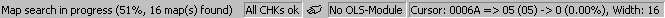

|
Status bar |

  
|
|
Status bar |
|

The status bar is displayed at the lower end of the WinOLS screen. You may toggle the status bar in the "view" menu with the command "status bar".
While you’re navigating through the menus, the status bar will display a help text for the choice you’re currently selecting. If you’re waiting with the mouse cursor over an icon, the status bar will display a help string for the icon, too.
When (like shown in the image above) the automatic background search is running, you’ll see its state in the status bar.
The first following range shows the state of the checksum modules. Depending on cursor position and configuration, WinOLS may display information about the checksums in general or about the current (manual) checksum.
Right of the checksum one or more icon(s) may display the state of a possibly connected OLS16 or OLS300 simulator module. Wait with the mouse cursor above a symbol to get a tooltip with a description. Right of the symbols, a textual description of the simulator state will be displayed.
The last range displays information about the cursor position, the current field value at the cursor position (and the original value), the relative change in comparison to the original (also in percent) and finally the width of the current hexdump or map.
Note:
You may right-click any of the ranges to receive a matching context menu for the range that you clicked.